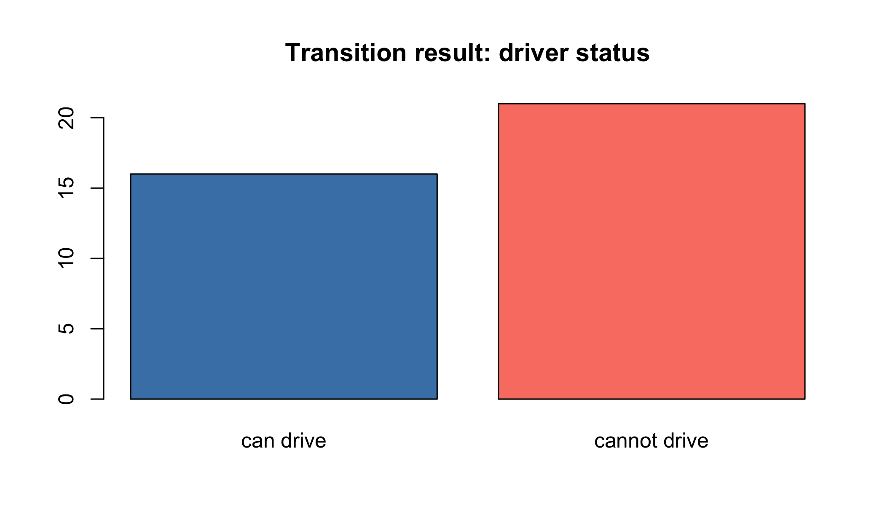

The goal of dymium is to provide an easy-to-install and update solution for the dymium packages. If you are interested in learning about the framework and start developing your own microsimulation model using R please see dymiumCore. Some ready to use urban microsimulation modules are available at dymiumModules.
Installation
The dymium package has not been released on CRAN, but you can install GitHub with:
A Minimal Example
This is a minimal example of a microsimulation model built with Dymium
library(dymium)
#> + dymiumCore 0.0.10 Date: 2019-12-02
#> R: 3.6.1
#> OS: macOS Mojave 10.14.6
#> GUI: X11
#>
#>
library(data.table)
library(R6)
set.seed(728)
head(toy_individuals)
#> pid hid age sex marital_status partner_id father_id mother_id
#> 1: 1 1 71 male never married NA NA NA
#> 2: 2 2 31 female never married NA NA NA
#> 3: 3 2 29 female never married NA NA NA
#> 4: 4 3 38 male married 5 NA NA
#> 5: 5 3 25 female married 4 NA NA
#> 6: 6 3 0 male not applicable NA 4 5
head(toy_households)
#> hid did
#> 1: 1 1
#> 2: 2 2
#> 3: 3 3
#> 4: 4 4
#> 5: 5 5
#> 6: 6 6
Pop <-
Population$new(
ind_data = toy_individuals,
hh_data = toy_households,
pid_col = "pid",
hid_col = "hid"
)
#> [09:56:31] WARN dymiumCore self$initialise_data: Creating `hhsize` as it is not provided with `hh_data`.
#> [09:56:31] INFO dymiumCore self$get("Individual")$initialise_data: sets hid_col to: 'hid'
Ind <- Pop$get("Individual")
Ind
#> Class: Individual
#> Inheritance: Individual <- Agent <- Entity <- Generic <- R6
#> Number_of_entities: 373
#> Number_of_removed_entities: 0
#> Data[rows, cols]: attrs[373, 8]
# create a probabilistic model
driver_status_rate <- data.table(
sex = c('male', 'female'),
probs = list(c(0.3,0.7), c(0.4,0.6)),
choices = list(c('can drive', 'cannot drive'), c('can drive', 'cannot drive'))
)
driver_status_rate
#> sex probs choices
#> 1: male 0.3,0.7 can drive,cannot drive
#> 2: female 0.4,0.6 can drive,cannot drive
# create a Transition for driver status
TransitionCandrive <- R6::R6Class(
classname = "TransitionCandrive",
inherit = TransitionClassification
)
TransCanDrive <- TransitionCandrive$new(Ind, driver_status_rate)
barplot(
table(TransCanDrive$get_result()[['response']]),
main = "Transition result: driver status",
col = c('steelblue', 'salmon')
)
Credits
This repo is basically a modified version of the Tidyverse package to load the dymium packages.